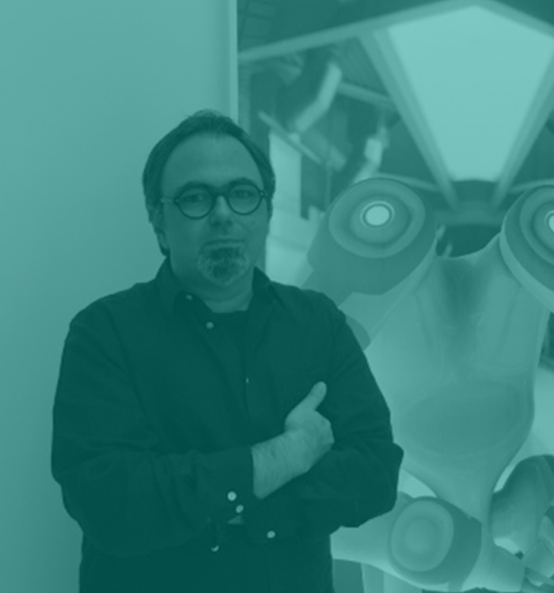

Miguel Soares
Nome: Miguel Soares
Nacionalidade: Portuguesa
Email: migsomail@yahoo.com / m@migso.net
Site: www.migso.net
Miguel Soares (Braga, 1970) é um artista plástico português pioneiro dos novos media.
Conhecido sobretudo pelos seus trabalhos de animação inspirados na ficção científica (exposição retrospectiva
na Culturgest, Lisboa, Outubro 2008). Soares trabalha em diversos mídia como a instalação multimedia, a
videoarte, música electrónica (dois discos editados através do seu alter-ego migso), manipulação de
jogos de computador, e fotografia (foi vencedor do prémio BES Photo 2007).
Estudou Fotografia no Ar.Co, em Lisboa (1989-1990), Licenciou-se na Faculdade de Belas Artes da Universidade de Lisboa de 1989 a 1995. Foi Bolseiro do Centro Nacional de Cultura em 1994 e 1996. Bolseiro do Acordo Tripartido do Ministério da Cultura, Fundação Calouste Gulbenkian e Fundação-Luso Americana para o Desenvolvimento para uma residência artística no Location One,em Nova Iorque (2003-2004).
De 2006 a 2008 foi Professor Auxiliar Convidado na Licenciatura em Artes Visuais da Faculdade de Ciências Humanas e Sociais da Universidade do Algarve. Entre 2008 e 2013 foi Professor Auxiliar Convidado do Departamento de Arquitectura da Faculdade de Ciências e Tecnologia da Universidade de Coimbra. É doutorando do Colégio das Artes, em Coimbra.
Estudou Fotografia no Ar.Co, em Lisboa (1989-1990), Licenciou-se na Faculdade de Belas Artes da Universidade de Lisboa de 1989 a 1995. Foi Bolseiro do Centro Nacional de Cultura em 1994 e 1996. Bolseiro do Acordo Tripartido do Ministério da Cultura, Fundação Calouste Gulbenkian e Fundação-Luso Americana para o Desenvolvimento para uma residência artística no Location One,em Nova Iorque (2003-2004).
De 2006 a 2008 foi Professor Auxiliar Convidado na Licenciatura em Artes Visuais da Faculdade de Ciências Humanas e Sociais da Universidade do Algarve. Entre 2008 e 2013 foi Professor Auxiliar Convidado do Departamento de Arquitectura da Faculdade de Ciências e Tecnologia da Universidade de Coimbra. É doutorando do Colégio das Artes, em Coimbra.
